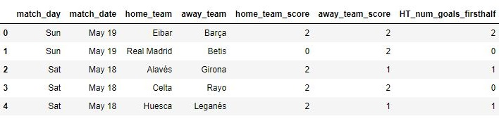

Published: Mon 19 August 2019
By Parth Shah
In misc .
Environment Setup
I have used Python 3.6 for this tutorial. The required libraries are as follows:
numpy
pandas
bs4 (BeautifulSoup)
urllib (Module for working with URLs)
Web Scraping from msn.com
The website lists the scores for each month on a separate page and it follows this pattern:
https://www.msn.com/en-us/sports/soccer/la-liga/scores/
https://www.msn.com/en-us/sports/soccer/la-liga/scores/sp-d-20190428
https://www.msn.com/en-us/sports/soccer/la-liga/scores/sp-d-20190428-d-20190331
https://www.msn.com/en-us/sports/soccer/la-liga/scores/sp-d-20190428-d-20190331-d-20190303
As we can see notice the pattern here:(I )
http://............./sp-d-(new-match-date )-d-(past-date )-d-(past-date ).
I recorded those dates in a list and created a function that gives me all the links.
links = [ '20190428' , '20190331' , '20190303' , '20190203' , '20190106' , '20181209' , '20181111' , '20181014' , '20180916' , '20180819' ]
def fetch_website ( links ):
urls = []
url = 'https://www.msn.com/en-us/sports/soccer/la-liga/scores/'
urls . append ( url )
url += 'sp'
for i , l in enumerate ( links ):
url += '-d-' + links [ i ]
urls . append ( url )
return urls
urls = fetch_website ( links )
['https://www.msn.com/en-us/sports/soccer/la-liga/scores/',
'https://www.msn.com/en-us/sports/soccer/la-liga/scores/sp-d-20190428',
'https://www.msn.com/en-us/sports/soccer/la-liga/scores/sp-d-20190428-d-20190331',
'https://www.msn.com/en-us/sports/soccer/la-liga/scores/sp-d-20190428-d-20190331-d-20190303'...]
Once we have the links, all we have to do is create a script that runs through all the links and gives us the desired output. The page source of the web page looks like this:
Our scores are listed in the sectionsgroup container. Each team scores are in a tbody tag distributed by even rowlink and odd rownlink classes. Now we can use the power of BeautifulSoup to scrape the contents with just two functions:
find : This function takes the name of the tag as string input and returns the first found match from the webpage.
Here we will find the div container with class sectionsgroup that contains all the score results.
findAll : to extract all the occurrences of a particular tag from the page.
Here we will findAll the tbody tags with classes even rowlink & odd rowlink and then loop through each of them to get the contents.
The following is the code to scrape just one webpage:
url = 'https://www.msn.com/en-us/sports/soccer/la-liga/scores/'
html = urllib . request . urlopen ( url ) . read ()
raw = bs4 . BeautifulSoup ( html , 'lxml' )
results = raw . find ( 'div' , { 'class' : 'sectionsgroup' }) . findAll ( 'tbody' , { 'class' : [ 'even rowlink' , 'odd rowlink' ]})
for r in results :
home_team = r . find ( 'td' , { 'class' : 'teamname teaminline alignright size23' }) . text . strip ()
away_team = r . find ( 'td' , { 'class' : 'teamname size23' }) . text . strip ()
match_date = r . find ( 'td' , { 'class' : 'groupingcolumn paddingleft' }) . find ( 'div' , { 'class' : 'matchdate' }) . text . strip ()
scores = r . findAll ( 'td' , { 'class' : 'teamscore' })
home_team_score = scores [ 0 ] . text . strip ()
away_team_score = scores [ 1 ] . text . strip ()
data_link = 'https://www.msn.com' + r . find ( 'a' ) . get ( 'href' )
This gives us the team names, match date, their scores and the data_link (link that takes us to a separate page for detailed statistics of each match) using just find and findAll tags. Now to run through all pages we just have to run this for each and every link and append the results to a list.
def get_html ( urls ):
teams = []
for url in urls :
html = urllib . request . urlopen ( url ) . read ()
raw = bs4 . BeautifulSoup ( html , 'lxml' )
results = raw . find ( 'div' , { 'class' : 'sectionsgroup' }) . findAll ( 'tbody' , { 'class' : [ 'even rowlink' , 'odd rowlink' ]})
for r in results :
home_team = r . find ( 'td' , { 'class' : 'teamname teaminline alignright size23' }) . text . strip ()
away_team = r . find ( 'td' , { 'class' : 'teamname size23' }) . text . strip ()
match_date = r . find ( 'td' , { 'class' : 'groupingcolumn paddingleft' }) . find ( 'div' , { 'class' : 'matchdate' }) . text . strip ()
scores = r . findAll ( 'td' , { 'class' : 'teamscore' })
home_team_score = scores [ 0 ] . text . strip ()
away_team_score = scores [ 1 ] . text . strip ()
data_link = 'https://www.msn.com' + r . find ( 'a' ) . get ( 'href' )
teams . append ([ match_date . split ( ',' )[ 0 ], match_date . split ( ',' )[ 1 ][ 1 :], home_team , away_team ,
home_team_score , away_team_score , data_link ])
time . sleep ( 5 )
return teams
[['Sun',
'May 19',
'Eibar',
'Barça',
'2',
'2',
'https://www.msn.com/en-us/sports/soccer/la-liga/eibar-v-barcelona/game-center/sp-id-80402000001009693'],
['Sun',
'May 19',
'Real Madrid',
'Betis',
'0',
'2',
'https://www.msn.com/en-us/sports/soccer/la-liga/real-madrid-v-real-betis/game-center/sp-id-80402000001009694'],
...
]
Now I don't only want the scores, I want the detailed statistics for each and every match such as team's posession, offsides, fouls, etc. This can be obtained by following the same scraping process we did above, but now for each data_link that we obtain from each match.
Note : This image is from the 2019/20 season as msn have updated it to the current season.
The following is the page source for one of the matches:
The information of detailed stats is in the div container with id matchupgamestatsmodule . And all the individual statistics is present in the div container with class statsitem .
html_link = urllib . request . urlopen ( data_link )
raw_link = bs4 . BeautifulSoup ( html_link , 'lxml' )
result_link = raw_link . find ( 'div' , { 'id' : 'main' }) . find ( 'div' , { 'id' : 'matchupgamestatsmodule' }) . findAll ( 'div' , { 'class' : 'statsitem' })
< div class = "statsitem" >
< div class = "statsvalue clearfix" >
< div class = "firstteamstats" > 28</ div >
< div class = "label" > BALL POSSESSION % </ div >
< div class = "secondteamstats" > 72</ div > </ div >
...
< div class = "firstteamstats" > 11</ div >
< div class = "label" > SHOTS </ div > < div class = "secondteamstats" > 11</ div >
...]
Here there is no way to separate out individual statistics as all the class labels have been named the same for each statistics. The only way to separate them out is the text of the div tag with class label . So instead of fetching each stats through html elements, I simply converted them into a list which is simply looping through each statsitem container and get the textual data.
stats = []
for rl in result_link :
stats . append ( rl . text . split ())
Now we have a nice list with individual statistics. The first and the last value in the list represent the stats of home team and away team respectively.
[['28', 'BALL', 'POSSESSION', '%', '72'],
['11', 'SHOTS', '11'],
['5', 'SHOTS', 'ON', 'GOAL', '2'],
['14', 'FOULS', '9'],
['3', 'CORNERS', '8'],
['2', 'SAVES', '4'],
['2', 'OFFSIDES', '1'],
['1', 'YELLOW', 'CARDS', '1'],
['0', 'RED', 'CARDS', '0']]
The second element in each list would be an identifier for each type of stats. I created a separate function get_stats(stats) for that. The stats parameter in the function is the list we obtained above which can be passed through our main get_html() function.
def get_stats ( stats ):
stat_list = [ 'BALL' , 'SHOTS' , 'FOULS' , 'CORNERS' , 'SAVES' , 'OFFSIDES' , 'YELLOW' , 'RED' ]
len_stats = len ( stats )
home_shots_og = None
away_shots_og = None
home_saves = None
away_saves = None
home_offsides = None
away_offsides = None
home_poss = None
away_poss = None
home_fouls = None
away_fouls = None
home_shots = None
away_shots = None
home_corners = None
away_corners = None
home_yellow = None
away_yellow = None
home_red = None
away_red = None
for i in range ( len_stats ):
if stats [ i ][ 1 ] in stat_list :
if stats [ i ][ 1 ] == 'BALL' :
home_poss = stats [ i ][ 0 ]
away_poss = stats [ i ][ - 1 ]
if stats [ i ][ 1 ] == 'FOULS' :
home_fouls = stats [ i ][ 0 ]
away_fouls = stats [ i ][ - 1 ]
if stats [ i ][ 1 ] == 'CORNERS' :
home_corners = stats [ i ][ 0 ]
away_corners = stats [ i ][ - 1 ]
if stats [ i ][ 1 ] == 'SAVES' :
home_saves = stats [ i ][ 0 ]
away_saves = stats [ i ][ - 1 ]
if stats [ i ][ 1 ] == 'OFFSIDES' :
home_offsides = stats [ i ][ 0 ]
away_offsides = stats [ i ][ - 1 ]
if stats [ i ][ 1 ] == 'YELLOW' :
home_yellow = stats [ i ][ 0 ]
away_yellow = stats [ i ][ - 1 ]
if stats [ i ][ 1 ] == 'RED' :
home_red = stats [ i ][ 0 ]
away_red = stats [ i ][ - 1 ]
if stats [ i ][ 1 ] == 'SHOTS' :
if len ( stats [ i ]) == 3 :
home_shots = stats [ i ][ 0 ]
away_shots = stats [ i ][ - 1 ]
else :
home_shots_og = stats [ i ][ 0 ]
away_shots_og = stats [ i ][ - 1 ]
return ( home_poss , away_poss , home_shots , away_shots , home_shots_og , away_shots_og , home_fouls , away_fouls , home_corners ,
away_corners , home_saves , away_saves , home_offsides , away_offsides , home_yellow , away_yellow , home_red , away_red )
def get_html ( urls ):
teams = []
for url in urls :
html = urllib . request . urlopen ( url ) . read ()
raw = bs4 . BeautifulSoup ( html , 'lxml' )
........
data_link = 'https://www.msn.com' + r . find ( 'a' ) . get ( 'href' )
try :
html_link = urllib . request . urlopen ( data_link )
except urllib . error . HTTPError :
# check this at the end. hard coded link
html_link = urllib . request . urlopen ( 'https://www.msn.com/en-us/sports/soccer/la-liga/eibar-v-barcelona/game-center/sp-id-80402000001009693' )
raw_link = bs4 . BeautifulSoup ( html_link , 'lxml' )
result_link = raw_link . find ( 'div' , { 'id' : 'main' }) . find ( 'div' , { 'id' : 'matchupgamestatsmodule' }) . findAll ( 'div' , { 'class' : 'statsitem' })
stats = []
for rl in result_link :
stats . append ( rl . text . split ())
res = get_stats ( stats )
teams . append ([ match_date . split ( ',' )[ 0 ], match_date . split ( ',' )[ 1 ][ 1 :], home_team , away_team ,
home_team_score , away_team_score , data_link , res [ 0 ], res [ 1 ], res [ 2 ], res [ 3 ],
res [ 4 ], res [ 5 ], res [ 6 ], res [ 7 ], res [ 8 ], res [ 9 ], res [ 10 ], res [ 11 ], res [ 12 ], res [ 13 ], res [ 14 ],
res [ 15 ], res [ 16 ], res [ 17 ]])
time . sleep ( 5 )
return teams
This gives us all the match results with individual team statistics. We can also derive some statistics of our own from this. For example, I was curious to know if some teams are more likely to score in the first half or second half. So I created a separate function get_score_count_perhalf(score_link) to find number of goals scored by both home and away teams in each of the halves.
def get_score_count_perhalf ( score_link ):
result_link = score_link . find ( 'div' , { 'id' : 'main' }) . find ( 'div' , { 'class' : 'teamevent' })
home_team_scores = []
home_team_scores_firsthalf = 0
home_team_scores_secondhalf = 0
try :
home_team_link = result_link . find ( 'div' , { 'class' : 'hometeamevent' }) . findAll ( 'span' , { 'class' : 'scoremins' })
for h in home_team_link :
score = h . text . strip () . split ( "'" )[ 0 ]
if int ( score ) <= 45 :
home_team_scores_firsthalf += 1
if int ( score ) > 45 :
home_team_scores_secondhalf += 1
home_team_scores . append ( score )
except AttributeError :
# check this later.(Leganes vs Celta: Apr 27)
home_team_scores . append ( 99 )
home_team_scores_firsthalf = 99
home_team_scores_secondhalf = 99
away_team_scores = []
away_team_scores_firsthalf = 0
away_team_scores_secondhalf = 0
try :
away_team_link = result_link . find ( 'div' , { 'class' : 'visitingteamevent' }) . findAll ( 'span' , { 'class' : 'scoremins' })
for a in away_team_link :
score = a . text . strip () . split ( "'" )[ 0 ]
if int ( score ) <= 45 :
away_team_scores_firsthalf += 1
if int ( score ) > 45 :
away_team_scores_secondhalf += 1
away_team_scores . append ( score )
except AttributeError :
away_team_scores . append ( 99 )
away_team_scores_firsthalf = 99
away_team_scores_secondhalf = 99
return ( home_team_scores_firsthalf , home_team_scores_secondhalf , away_team_scores_firsthalf , away_team_scores_secondhalf )
The teams list will now have all the information we needed.
all_matches = get_html ( urls )
[['Sun',
'May 19',
'Eibar',
'Barça',
'2',
'2',
2,
0,
2,
0,
'https://www.msn.com/en-us/sports/soccer/la-liga/eibar-v-barcelona/game-center/sp-id-80402000001009693',
'39',
'61',
'18',
'8',
'8',
'3',
'17',
'5',
'5',
'2',
'1',
'6',
None,
None,
'4',
'2',
'0',
'0'],
['Sun',
'May 19',
'Real Madrid',
'Betis',
'0',
'2',
0,
0,
0,
2,
'https://www.msn.com/en-us/sports/soccer/la-liga/real-madrid-v-real-betis/game-center/sp-id-80402000001009694',
'47',
'53',
'9',
'9',
'2',
'7',
'18',
'10',
'1',
'5',
'5',
'2',
'1',
'4',
'4',
'1',
'0',
'0'],...]
Now we can very simply convert into a dataframe and start analyzing!
cols = [ 'match_day' , 'match_date' , 'home_team' , 'away_team' , 'home_team_score' , 'away_team_score' , 'HT_num_goals_firsthalf' ,
'HT_num_goals_secondhalf' , 'AT_num_goals_firsthalf' , 'AT_num_goals_secondhalf' , 'match_link' , 'home_posession' ,
'away_posession' , 'home_shots' , 'away_shots' , 'home_shots_ontarget' , 'away_shots_ontarget' , 'home_fouls' ,
'away_fouls' , 'home_corners' , 'away_corners' , 'home_saves' , 'away_saves' , 'home_offsides' , 'away_offsides' ,
'home_yellow' , 'away_yellow' , 'home_red' , 'away_red' ]
df = pd . DataFrame ( all_matches , columns = cols )
